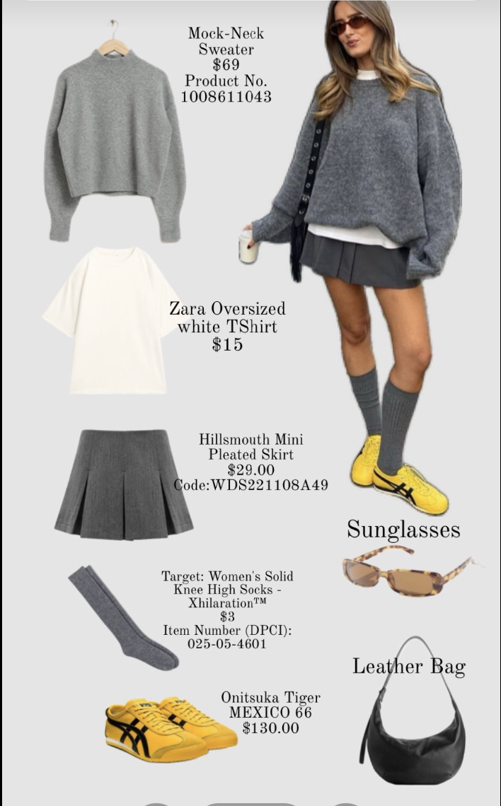
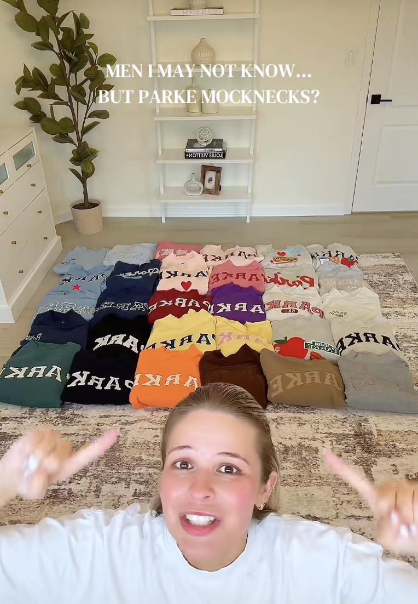
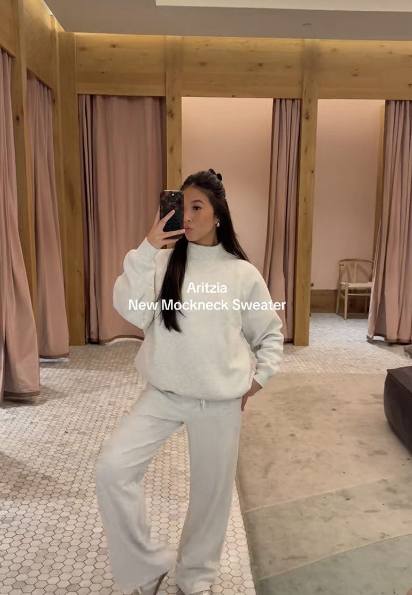
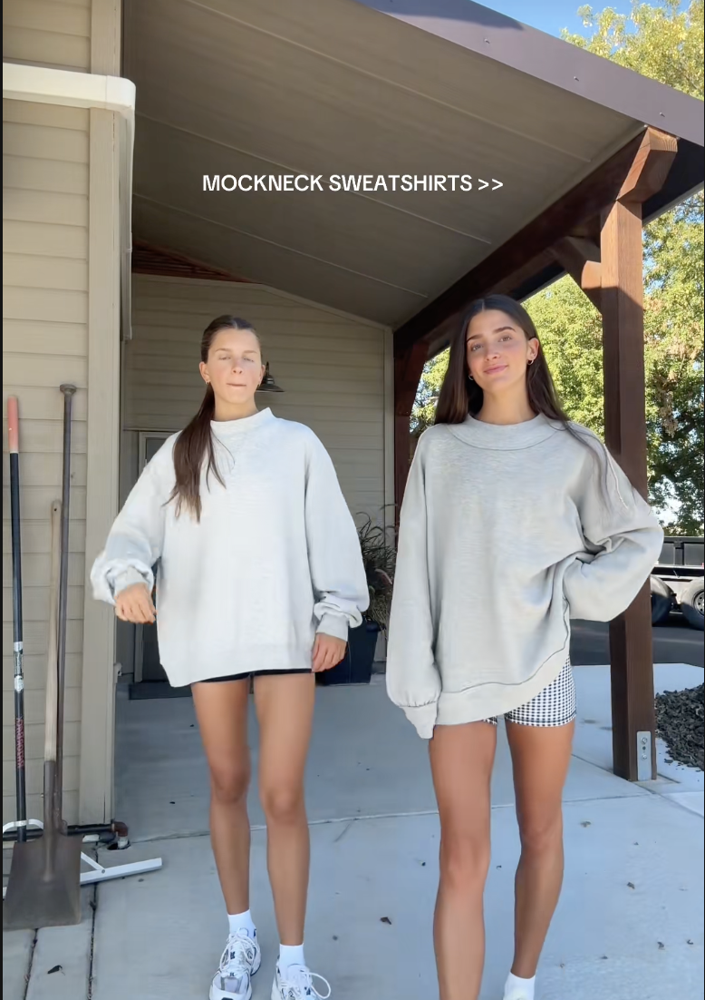

The Trend Timeline
Before analyzing the data, we wanted to understand how the mock neck trend moved from a repeated fashion item to a highly visible TikTok trend. This timeline shows the basic life cycle of the trend, from early influencer posts to wider brand adoption and audience interaction.

First Sightings
Early creators began posting oversized mock neck outfits in casual “OOTD” videos before the silhouette became widely recognized as a trend.

Early Growth
More creators started using similar styling formats, neutral color palettes and influencer-inspired outfit collages, helping the trend spread more quickly across TikTok.

Viral Moment
High-performing videos push the mock neck trend onto more users’ For You pages. Repetition makes the item feel popular, familiar and desirable.

Brand Adoption
Brands such as PARKE, Aritzia, Abercrombie and Free People begin appearing more often in mock neck content. The trend shifts from general styling to brand-specific interest.

Saturation
The style becomes widely visible and highly repeated across TikTok. At this point, originality can decrease, but the trend remains recognizable because users keep seeing it.

Data Confirms It
Our data reflects this cycle. General posts help create visibility, while brand-specific posts often create stronger interaction through comments, likes and product interest.
Data Collection
To analyze the mock neck trend, we collected TikTok data from two categories: general mock neck content and PARKE-specific content. Using a data scraping tool, we gathered information from multiple videos, including views, likes, comments and captions. This helped us compare broad trend visibility with content connected to one specific brand.
What We Measured
We focused on key engagement metrics such as views, likes and comments. We also looked at engagement rate, which compares likes and comments to total views. This matters because a post with a lot of views is not always the strongest example of audience interest. We also analyzed caption language to identify repeated words, phrases and themes that appeared across mock neck TikToks.
Why This Method Matters
This method allowed us to move beyond simply noticing that mock necks were popular. By comparing two datasets, we could see how different types of content performed and how audience interaction helped reinforce the trend. The timeline gave us a way to understand the trend’s growth visually, while the data helped confirm how visibility, repetition and brand recognition shaped engagement over time.